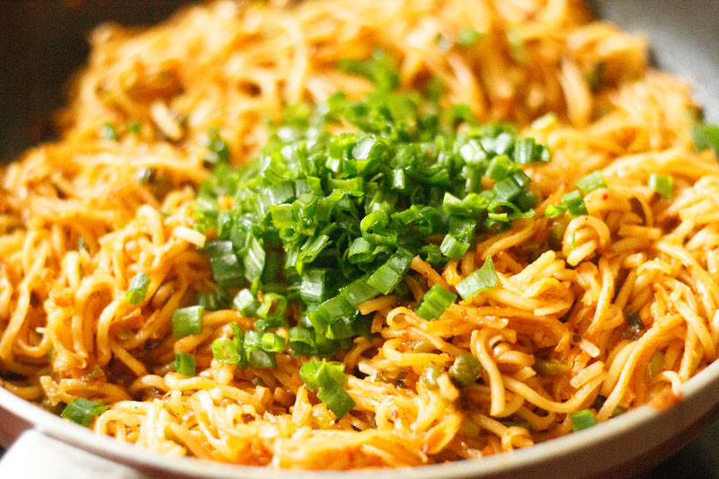

Home
Noodles

Description
Schezwan noodles are a popular Indo-Chinese street food dish that combines stir-fried noodles with a fiery, aromatic Schezwan sauce. Originally inspired by the bold flavors of Sichuan cuisine from Southwest China, this fusion dish is characterized by its spicy, tangy, and savory profile, distinguishing it from milder noodle varieties like Hakka noodles.
Ingredients
- Noodles
- Schezwan Sauce
- Garlic
- Green Onion
- French Beans
- Carrot
- Capsicum
- Mushrooms
- Cabbage
- Olive Oil / Cooking Oil
- Salt
- Vinegar
Steps
- First, per the noodle package directions, bring the recommended amount of water to a boil in a large pot or pan. Add a pinch of salt for flavor, and a few drops of oil to keep the noodles from sticking together.
- Once the water is to a full boil, add the noodles (150 grams). I prefer to use hakka noodles, but any thin rice or wheat flour noodles will work well for this recipe.
- There is no need to break the noodles when added to the boiling water. Just be sure they are completely submerged in the water.
- Cook the noodles according to the package instructions, stirring occasionally.
- Cook the noodles until they are al dente. Immediately drain the noodles in a colander.Rinse the noodles in cool running water. This step stops the cooking process and removes the sticky starch.
- While still in the colander, add 1 to 2 teaspoons of oil to noodles. Any neutral oil works or for a smoky flavor, use toasted sesame oil.
- Toss the noodles gently, so that the oil evenly coats the noodles. This helps to get rid of stickiness from the noodles. Cover the colander with a plate and set aside. Let the noodles cool completely before you begin making schezwan noodles recipe.
- Next, heat 2 tablespoons of oil (any neutral tasting oil) in a pan or wok on medium heat. A wok or pot with a heavy bottom works best to get great cook on the veggies without burning. Once the oil is hot add ½ teaspoon of finely chopped garlic and sauté for a few seconds.
- When the garlic is fragrant, increase the flame to medium or high heat and add ¼ cup of chopped spring onions (scallion whites). Stir fry for about half to 1 minute. Then add ¼ cup of finely chopped french beans. Keep stir-frying, stirring continuously, on a medium to high heat for about 3 to 4 minutes.
- Now add the remaining veggies:
¼ cup finely chopped carrots
¼ cup of capsicum (green bell pepper)
½ cup of finely chopped cabbage
1 cup chopped or sliced mushrooms.
- Continue to stir fry the veggies on a medium to high heat to get that great smoky flavor. Make sure you stir constantly so that the vegetables brown evenly without burning.
- Cook for about 7 to 8 minutes (time will vary with the kind of pan and intensity of flame or heat), until the edges of the veggies start to slightly brown. Depending on how crunchy or soft you like your vegetables, feel free to stir fry for more or less time.
- Now reduce the heat to medium and add 1 tablespoon of homemade or store bought Schezwan sauce, salt and ¼ to ½ teaspoon black pepper.
- Add the cooked noodles one handful at a time, stirring gently to incorporate without mushing the noodles.
- Increase the flame back up to high, and continue to stir fry and toss the noodles for a couple of minutes until the Schezwan sauce coats all of the noodles.
- Add 1 teaspoon of either rice vinegar or apple cider vinegar, and toss again. This hit of tangy flavor really brings together the spiciness and sweetness of the Schezwan noodles with veggies.
- Lastly, stir in a tablespoon of chopped spring onion greens.
- Enjoy schezwan noodles hot in bowls or on plates. You can also serve extra Schezwan sauce on the side for people who want to add even more heat.